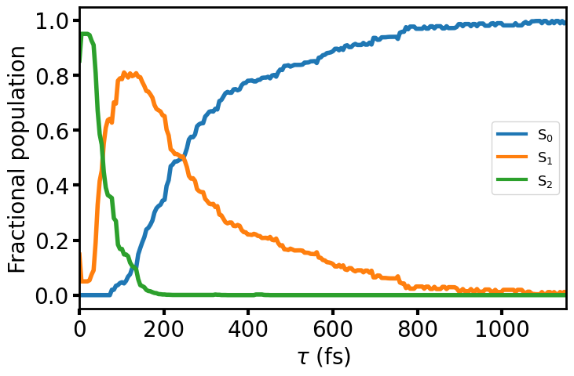

        <section>
          <h3 style="margin: 0 0 0.3em;">Butadiene — Simulated Population Dynamics</h3>
          
          <div style="font-size: 0.40em; margin-top: 0.5em;">
            <div class="col-box" style="border: 1px solid #ddd; border-radius: 8px; padding: 0.6em 0.9em;">
              <ul style="margin: 0; padding-left: 1.2em;">
                <li>$v=0$ Wigner distribution, vertically projected</li>
                <li>Ab Initio Multiple Spawning at MR-CIS theory level: (4,4) active space with 6-31G* basis set</li>
              </ul>
            </div>
          </div>
        </section>
